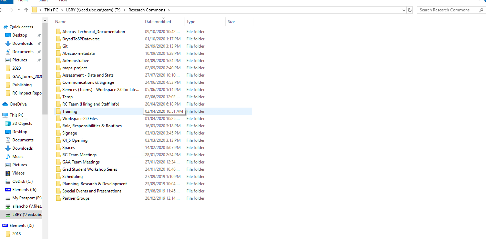
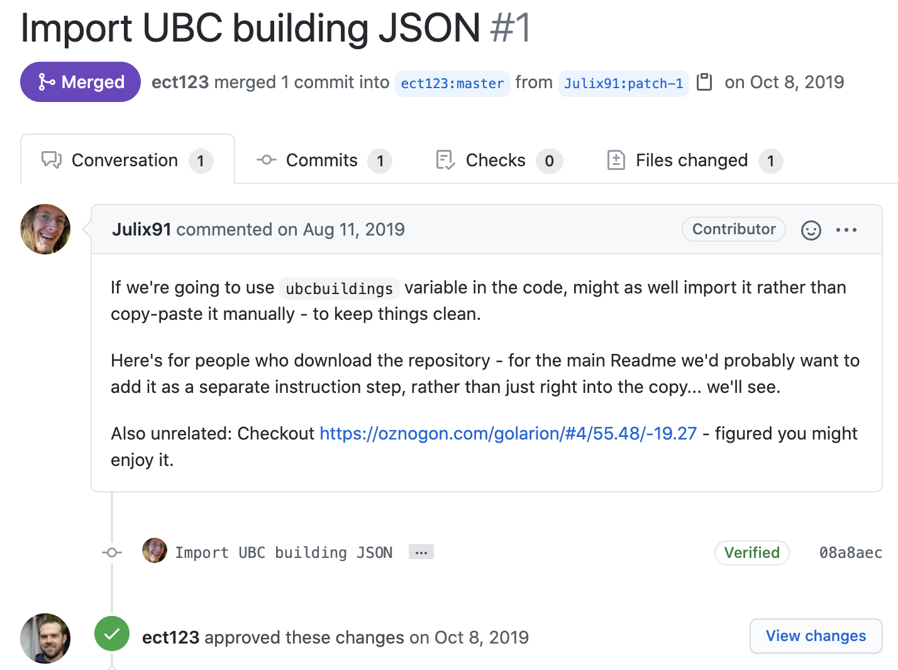

Teaching in the Online Environment - GitHub and GitHub Pages for collaborative workshops development
Adapted from a presentation given at Access 2020 by a few of us on the Research Commons team
Jeremy Buhler - Data Librarian
Allan Cho - Research Commons Librarian
Eka Grguric - Digital Scholarship Librarian
Evan Thornberry - GIS Librarian
Allan Cho - Research Commons Librarian
Eka Grguric - Digital Scholarship Librarian
Evan Thornberry - GIS Librarian
UBC Vancouver is located on the traditional, ancestral, and unceded territory of the xʷməθkʷəy̓əm (Musqueam), səl̓ilwətaɁɬ təməxʷ (Tsleil-Waututh), Stz'uminus, S’ólh Téméxw (Stó:lō), Skwxwú7mesh-ulh Temíx̱w (Squamish), and Coast Salish peoples.
UBC Library Research Commons
A multidisciplinary hub supporting research endeavours, partnerships, and education.
- New team, new approach
- In January 2020
- Working and learning together
"Pre-Pandemic and Pre-GitHub"
- Many internal shared folders
- Non-portable & non-reproducible
- Uncoordinated approaches
Disorganized Workflow
Proposed New Approach
- Collaborative, using freely available tools accessible outside of the university
- Git, GitHub, GitHub Pages & Reveal.js
- Presentations through GitHub Pages
Why GitHub?
- Existing experience on the team with Git and GitHub
- Already in use by members of the team for similar cases (GIS workshops)
- This included workshop content in repo and Reveal.js slides via GH Pages
Community inspiration
- Inspiration from the Carpentries' OER model
- Philosophical desire to lower barriers to access and remixing
- Not a UBC specific platform / approach
- Content requires only a browser window to access and is downlodable for bad connections
Upskilling
- New team, new desire to upskill and experiment with new workflows
- Goal to better support technical consults
Sustainability
- Text-based approach easy to move, remix, repurpose
- Better ownership, collaboration, and maintenance workflows with growth in size of unit
- Currently, GitHub Pages is free and unlimited for our use case

Introduction to Docker workshop created by Chelsea Palmer

Improvement and maintenance
- Content Review Tracking repo for workshop-level
- GitHub Issues for specifics
- Pull requests for integrating changes
Workshops are reviewed

Issues are submitted and tagged

Pull requests from students or creators
Next steps
- Establishing a better practice for contributing to broader community (eg. Library Carpentries)
- Experimenting with other media and asynchronous content for virtual delivery